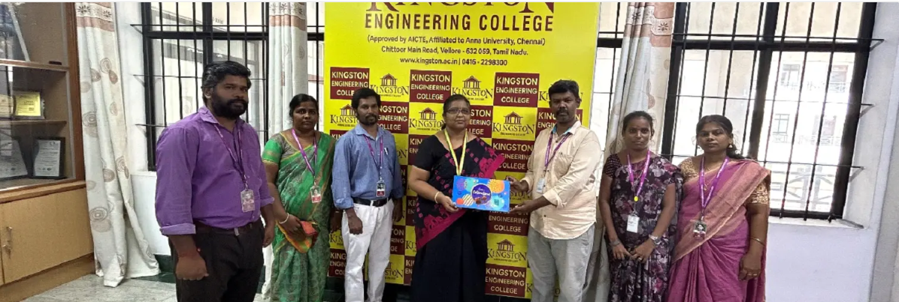

The institution follows a comprehensive performance appraisal system and provides benefits to the teaching and non-teaching employees. These benefits are intended to provide financial security, recognition, and support to employees, helping them feel valued and appreciated for their work. By offering these perks, the institution aims to foster a positive work environment and promote employee well-being.
Performance Appraisal Measures
The institution follows a comprehensive performance appraisal approach to ensure a well-rounded assessment, fostering a balanced and productive work environment. This holistic approach measures an individual's contributions to academic, research, and service activities. By evaluating faculty members in these three interconnected areas, it promotes excellence, collaboration, and a commitment to the broader mission of higher education.
Comprehensive Employee Welfare Programs
Comprehensive Employee Welfare Programs are implemented to create positive and productive work environment. Our forward-thinking institution contributes towards Employee Provident Fund (EPF), Employee's State Insurance (ESIC) by prioritizing the well-being of the employee's often experiencing higher levels of job satisfaction.
Financial Support
Financial support like Concession in Academic Fees, Festival Advance, Salary Advance, financial incentives to attend conferences, Faculty development Programs, Workshops and financial reimbursement for paper publications provided by the management is a recognition and morale support to employees.
Amenities
Amenities covering individual computing system, free wi-fi, mobile phone to HOD's provide a platform to perform their role effectively. This investment in technology demonstrates a commitment to creating a modern and adaptive environment.
Facilities
Facilities such as chargeless transport, complementary food on added working days, gratuitous refreshment during add-on working hours are given to create a supportive and inclusive workplace which contributes to employee's satisfaction but also lead to increased productivity and overall institutional success.
Career Progression Care
Career progression care is given by the institution through organizing Faculty Development Programs and they are encouraged to attend FDP's, Conferences, Workshop's. By investing in the professional development and recognition of faculty, institution create a positive cycle of excellence that benefits the entire academic community and contributes to the advancement of knowledge.
Career Motivation Culture
Career motivation culture is implemented through Monetary benefits for academic results which is a powerful motivator for staff members, leading to enhanced skills, improved performance, and greater job satisfaction. By carefully designing and implementing such a program, institution foster a culture of continuous learning and development, ultimately benefiting both employees and the company.
Cultivating Expert Technophiles
Cultivating expert Technophiles is done by the institution through a multifaceted approach that combines technical proficiency and passion for exploration aligns with the broader goals of innovation and societal progress.
Family - Friendly Workplace
Family - friendly workplace is maintained by the management by providing maternity and paternity leave and also celebrating staff birthdays acknowledging employees on their special day contributes to a sense of belonging and camaraderie within the organization.
Holistic Staff Health
Holistic staff health is well organized by implementation of General health care programs and awareness programs.
Molding Virtuoso for Social Consciousness
It is encouraged by the management towards staff members by extending their technical mastery for the betterment of society as a whole.
The institution follows effective welfare measure for teaching and non-teaching staff which provided them various opportunities for their pedagogical and professional progression with assurance of financial security.
Office Note
Dear Staff Members the following financial support and concessions are provided by the management towards the welfare of the Teaching and Non-teaching employees of the Institution.
- ESIC and EPF are provided as per the Government Norms.
- The employees with two years of continuous work experience are eligible to avail WARD ACADEMIC FEES CONCESSION which starts with 25% concession on the academic fees and the rate increases to 40%.
- 70% of the salary is given as FESTIVAL ADVANCE and SALARY ADVANCE and it is to be repaid in 6 equal installments. Emergency situations and important requirements are considered when there is a LUMPSUM need.
- On any EMERGENCY CRITICAL MEDICAL SITUATION as per the immediate need SALARY ADVANCE is provided.
- Registration Fees, Travelling Allowances (TA), Daily Allowances (DA) charges can be claimed as FINANCIAL INCENTIVES to attend FDP's, workshops, conferences, etc., which are held outside the Institution, and book publication and paper publication expenses can be reimbursed as FINANCIAL REIMBURSEMENTS.
- Bus fees from the boarding point to College are waived for staff members as CHARGELESS TRANSPORT.
- As a welfare measure, COMPLEMENTARY FOOD and GRATUITOUS REFRESHMENTS for employees are provided during added working days.
- LEAVE CONCESSIONS:
- MATERNITY LEAVE: It is allowed as per GOVERNMENT NORMS.
- PATERNITY LEAVE: 1 month leave is allowed with pay.
- MARRIAGE LEAVE: 7 days with pay is allowed.
- FUNERAL LEAVE: 7 days is allowed with pay.
- COMPENSATORY LEAVE: If worked on Sunday, compensatory leave can be claimed on working days with pay.
Facilities of using Chargeless Transport, Food and Refreshment
Chargeless Transport for Teaching Staffs
Free daily transportation for teaching staff members

Chargeless Transport for Non-Teaching Staffs
Free daily transportation for non-teaching staff members


Complimentary Food for Teaching and Non-Teaching Staffs
Free meals provided on added working days


Gratuitous Refreshment for Teaching and Non-Teaching Staffs
Gratuitous refreshment during add-on working hours

Cultivating Expert Technophiles
The management shapes the professional growth of the teaching staff members. The staff members turn out to be Academic Leaders, Industrial Transformers, Business connectors where they bridge the gap between the need of the industry and the institution. The management has arranged various visits to upgrade their technical proficiency and the faculties are benefitted out of it.

Transforming Professors to Industrial Connectors
Faculties at Fintech-Software Company - 13/09/2022


Amenities
Amenities covering individual computing system, free wi-fi, mobile phone to teaching staffs and administrative staffs are provided by the management to perform their role effectively. This investment in technology demonstrates a commitment to creating a modern and adaptive environment.

Staff Birthday Gifts
Celebrating staff birthdays acknowledging employees on their special day